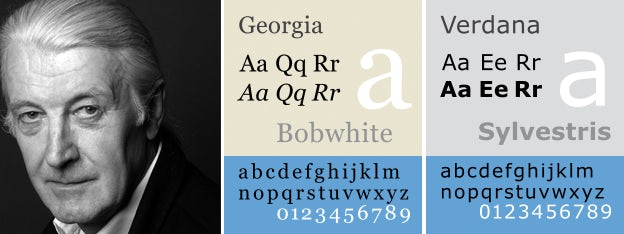
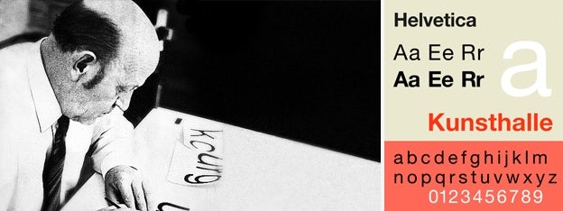
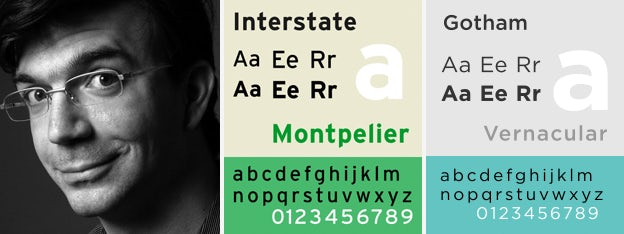
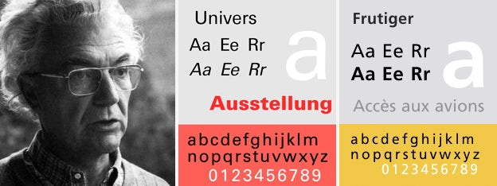
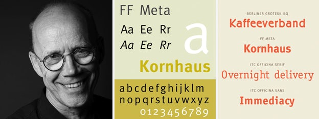
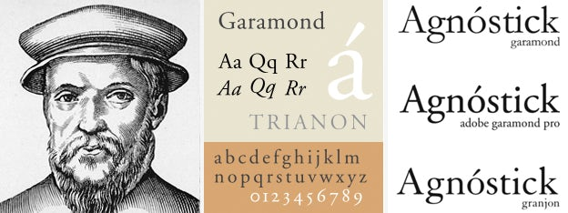
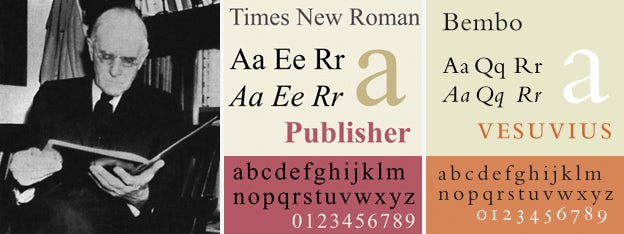
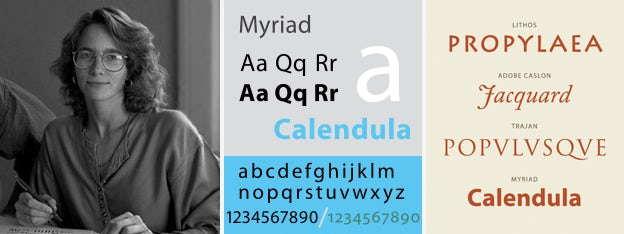
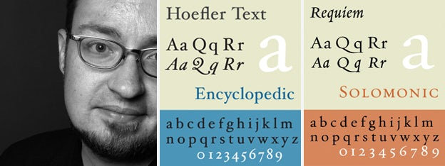
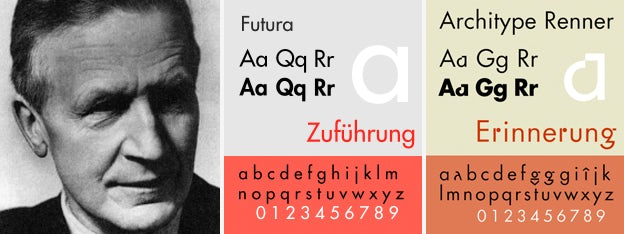

Matthew Carter

- Nationality: British
- Era: Contemporary
- Education: Internship at Joh. Enschedé in The Netherlands
- Foundry: Carter & Cone
- Famous Fonts: Georgia, Verdana, Tahoma, Bell Centennial
- Designed for: Time, Washington Post, The New York Times, Boston Globe, Wired, and Newsweek
- Find Out More: Wikipedia
Max Miedinger

- Nationality: Swiss
- Era: Mid-20th Century
- Education: Kunstgewerbeschule
- Famous Fonts: Helvetica (with Eduard Hoffmann)
- Other Skills: Typesetter
- Find Out More: Wikipedia
John Baskerville
- Nationality: British
- Era: 18th Century
- Famous Fonts: Baskerville
- Other Skills: Printing, paper, and ink production, lacquerwork and papier-maché
- Find Out More: Wikipedia
Tobias Frere-Jones

- Nationality: American
- Era: Contemporary
- Education: Rhode Island School of Designe
- Foundry: Frere-Jones Type
- Famous Fonts: Gotham, Interstate, Archer (with Jonathan Hoefler)
- Designed for: The Boston Globe, The New York Times, Cooper-Hewitt, National Design Museum, and the Whitney Museum
- Find Out More: Wikipedia
Adrian Frutiger

- Nationality: Swiss
- Era: Late 20th century
- Education: Rhode Island School of Designe
- Foundry: Deberny & Peignot
- Famous Fonts: Univers, Frutiger, Avenir
- Fonts used for: London street signage, Paris Metro, Deutsche Bank, GE, Apple
- Find Out More: Wikipedia
Erik Spiekermann

- Nationality: German
- Era: Contemporary
- Education: Berlin’s Free University
- Design Firm: Edenspiekermann
- Famous Fonts: Berliner Grotesk, FF Meta, ITC Officina Sans
- Designed for: Berlin Transit, Audi, Volkswagen, Nokia
- Other Skills: Graphic design, Letterpress
- Find Out More: Wikipedia
Claude Garamond

- Nationality: French
- Era: 16th Century
- Education: Apprenticed with Antoine Augereau
- Famous Fonts: Garamond
- Designed for: King François I
- Find Out More: Wikipedia
Stanley Morison

- Nationality: British
- Era: Early 20th Century
- Education: Self-taught
- Famous Fonts: Times New Roman (with Victor Lardent), revival of Baskerville
- Other Skills: Print Historian
- Find Out More: Wikipedia
Carol Twombly

- Nationality: American
- Era: Contemporary
- Education: Rhode Island School of Design, Stanford University
- Famous Fonts: Trajan, Myriad, Adobe Caslon, Chaparral
- Designed for: Adobe
- Find Out More: Wikipedia
Jonathan Hoefler

- Nationality: American
- Era: Contemporary
- Education: Rhode Island School of Design
- Foundry: Hoefler Type Foundry
- Famous Fonts: Hoefler Text, Requiem, Archer (with Frere-Jones)
- Designed for: Guggenheim Museum, Rolling Stone, Harper’s Bazaar, New York Times Magazine
- Find Out More: Wikipedia
Paul Renner

- Nationality: German
- Era: Early 20th Century
- Education: Several Universities
- Foundry: Hoefler Type Foundry
- Famous Fonts: Futura
- Other Skills: Author, Painter
- Find Out More: Wikipedia
Jan Tschichold
- Nationality: Swiss
- Era: Early 20th Century
- Famous Fonts: Sabon, Zeus
- Designed for: Penguin Books
- Other Skills: Author, Painter
- Find Out More: Wikipedia